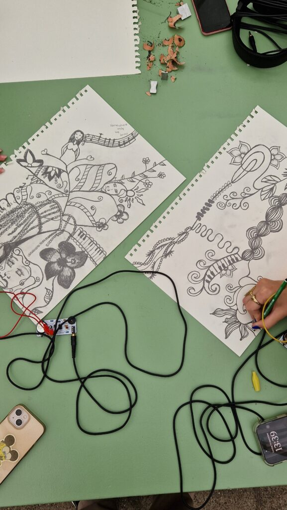

Workshops Lindenberg Cultuurhuis
Soms weet je pas wat je gemaakt hebt, als iemand anders ermee aan de slag gaat.

In oktober mochten we workshops verzorgen bij het Lindenberg Cultuurhuis. De interactie met de leerlingen was direct en open. Het was mooi om te zien hoe snel ze zich iets eigens maken van het materiaal dat we aanbieden. Samen met inScience vormden we een belangrijk onderdeel van de dag. Leerlingen ontwikkelden met de SideQuest Rave hun eigen soundtrack bij een zelfgemaakte film.
Het was de eerste keer dat we de SideQuest Rave op deze manier inzetten. Juist dat maakt dit werk zo waardevol. Je ontdekt steeds opnieuw dat de mogelijkheden niet worden begrensd door de techniek, maar door de ideeën die je zelf in je hoofd hebt. Anderen stappen er fris in en zien toepassingen waar je zelf nooit aan gedacht zou hebben. Op die momenten voelt het alsof onze machines beginnen te leven. Dat is stiekem iets waar we heel trots op zijn.
Ben jij ook benieuwd naar een workshop met ons? Bekijk welke workshops we aanbieden.